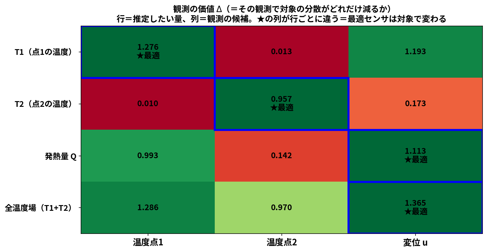
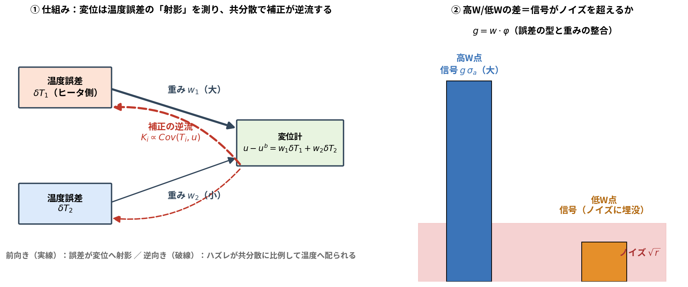
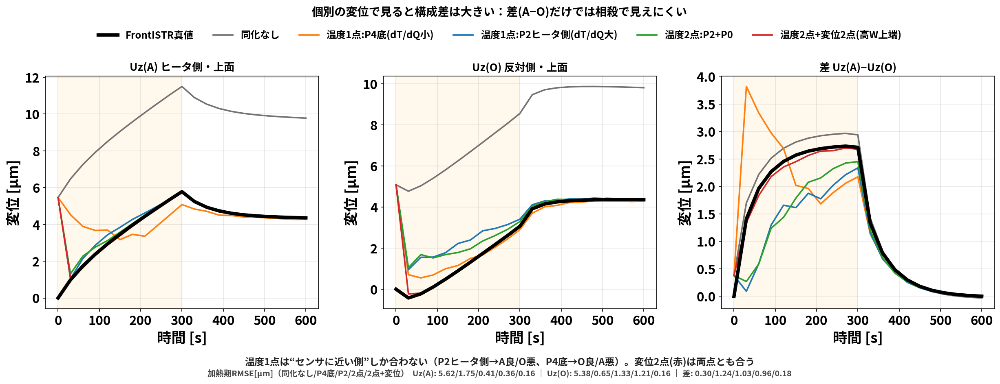
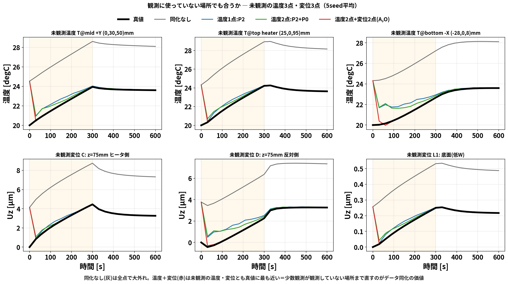

センサ配置の素朴な疑問から始めます。
温度センサや変位センサは、どこに置くのが一番いいのか？
答えを先に言うと、「何を推定したいか」で最適な置き場所（さらに種類・時間帯）が変わります。 温度場を知りたいときの最適配置と、発熱量 \(Q\) を当てたいときの最適配置は、同じではありません。 この記事では、それを 1本の式 → 小さな行列の手計算 → 実データ の順で示します。
この記事の流れ 1. 観測の価値を測る式 \(\Delta\) を導く（理論） 2. 3変数モデルの行列手計算で「対象ごとに最適観測が変わる」を見る（★が動く表） 3. 第3の軸「時間」：いつ観測するかも対象で変わる 4. 実データ（ROM＋EnKF/OI）で検証
データ同化の更新式（blog_002）から出発します。観測 \(y\) を1つ入れると、状態の共分散は
\[B^a=B-\frac{(Bh)(Bh)^{\mathsf T}}{h^{\mathsf T}Bh+r}\]
と縮みます（ \(h\) ＝観測演算子の行、 \(r\) ＝観測ノイズ分散）。いま知りたい量（推定対象）を \(X=c^{\mathsf T}x\) と書くと（ \(c\) は対象を取り出すベクトル）、\(X\) の分散がどれだけ減るかは
\[\boxed{\ \Delta(X,\ y)=\frac{\mathrm{Cov}(X,\ y)^2}{\mathrm{Var}(y)+r} =\frac{\bigl(c^{\mathsf T}Bh\bigr)^2}{h^{\mathsf T}Bh+r}\ }\]
これが観測の価値です。読み方は簡単で、
つまり「知りたい量とよく連動し、ノイズの小さい観測ほど価値が高い」。 ここで大事なのは、分子に 対象 \(c\) と観測 \(h\) の両方が入っていること。 観測の価値は対象に依存する＝「万能の最適センサ位置」は存在しない、が式の形から既に見えています。
状態 \(x=(T_1,\ T_2,\ Q)\) 。温度は \(Q\) で決まり（感度 \(s=(0.3,\ 0.1)\) ）、変位は温度で決まる （感度 \(w=(0.5,\ 0.2)\) ）。背景共分散は \(\sigma_T=1,\ \sigma_Q=2\) として
\[B=\begin{pmatrix} 1.36 & 0.12 & 1.2\\ 0.12 & 1.04 & 0.4\\ 1.2 & 0.4 & 4 \end{pmatrix},\qquad B=\mathrm{diag}(\sigma_T^2,\ \sigma_T^2,\ 0)+\sigma_Q^2\,a\,a^{\mathsf T},\quad a=(s_1,\ s_2,\ 1)^{\mathsf T}.\]
（成分の出どころ：対角 \(\sigma_T^2+\sigma_Q^2 s_i^2\) 、温度と \(Q\) の相関 \(\sigma_Q^2 s_i\) 。導出は blog_002 §3-5）
観測の候補は3つ（それぞれ \(h\) と \(r\) ）:
| 候補 | \(h\) | ノイズ \(r\) |
|---|---|---|
| 温度点1 | \((1,\ 0,\ 0)\) | \(0.3^2=0.09\) |
| 温度点2 | \((0,\ 1,\ 0)\) | \(0.09\) |
| 変位 \(u\) | \((w_1,\ w_2,\ 0)=(0.5,\ 0.2,\ 0)\) | \(0.1^2=0.01\) |
まず各候補の \(Bh\) （＝「その観測と各変数の共分散」の列）と \(\mathrm{Var}(y)+r\) :
\[B\begin{pmatrix}1\\0\\0\end{pmatrix}=\begin{pmatrix}1.36\\ 0.12\\ 1.2\end{pmatrix},\qquad B\begin{pmatrix}0\\1\\0\end{pmatrix}=\begin{pmatrix}0.12\\ 1.04\\ 0.4\end{pmatrix},\qquad B\begin{pmatrix}0.5\\0.2\\0\end{pmatrix} =\begin{pmatrix}0.5\cdot1.36+0.2\cdot0.12\\ 0.5\cdot0.12+0.2\cdot1.04\\ 0.5\cdot1.2+0.2\cdot0.4\end{pmatrix} =\begin{pmatrix}0.704\\ 0.268\\ 0.68\end{pmatrix}\]
\[\mathrm{Var}(y_1)+r=1.36+0.09=1.45,\qquad \mathrm{Var}(y_2)+r=1.04+0.09=1.13,\]
\[\mathrm{Var}(u)+r=w^{\mathsf T}Bw+r=0.5\cdot0.704+0.2\cdot0.268+0.01=0.4156.\]
例1：対象＝発熱量 \(Q\) （ \(c=(0,0,1)\) ）を温度点1で測る
\[\Delta(Q,\ y_1)=\frac{\bigl(c^{\mathsf T}Bh\bigr)^2}{1.45}=\frac{1.2^2}{1.45}=0.993\]
例2：対象＝ \(Q\) を変位 \(u\) で測る（分子は \(Bw\) の第3成分）
\[\Delta(Q,\ u)=\frac{0.68^2}{0.4156}=1.113\ \gt\ 0.993\]
→ \(Q\) には温度点1より変位の方が価値が高い。
例3：対象＝ \(T_2\) を変位 \(u\) で測る（分子は \(Bw\) の第2成分）
\[\Delta(T_2,\ u)=\frac{0.268^2}{0.4156}=0.173\ \ll\ \Delta(T_2,\ y_2)=\frac{1.04^2}{1.13}=0.957\]
→ \(T_2\) には温度点2が最適（変位は \(w_2=0.2\) としか連動しない）。
同じ計算を4対象×3候補で並べたのが下の表です（すべて上の \(B\) から電卓で出せます）:

| 推定対象＼観測候補 | 温度点1 | 温度点2 | 変位 \(u\) |
|---|---|---|---|
| \(T_1\) | 1.276 ★ | 0.013 | 1.193 |
| \(T_2\) | 0.010 | 0.957 ★ | 0.173 |
| 発熱量 \(Q\) | 0.993 | 0.142 | 1.113 ★ |
| 全温度場（ \(T_1\) + \(T_2\) ） | 1.286 | 0.970 | 1.365 ★ |
★（最適な観測）が行ごとに違います。 これがこの記事の主張の核心で、しかも理由は明快：
一言でいうと：観測の価値は「対象との共分散」で決まり、共分散は対象ごとに違う。 だから最適センサは推定対象の数だけある。

変位は複数点の温度誤差の射影（左・実線）を1つの数で読み、ハズレが共分散に比例して 逆流する（左・破線）。誤差が「共通の型」で起きるとき、型と重み \(w\) が揃う高W点は 信号がノイズを超える（右）。詳しい導出は blog_002 §3-7。
\(\Delta\) の分子 \(\mathrm{Cov}(X,y)\) は時刻の関数でもあります。直接感度（熱方程式を \(Q,h\) で微分したもの）を計算すると:
実験でも、同じ温度2点で同化する時間窓だけ変えると:

\(Q\) ：加熱期のみ0.57 W ≈ 全期間0.58 W、冷却期のみだと4.23 W（7倍悪化）＝ \(Q\) は加熱期の観測が担う。 \(h\) ：冷却期を足すと7.6→5.3 mW/Kと相対改善（ただし温度応答＜ノイズで依然難）。
つまり最適観測は どこで（空間）× 何を（種類）× いつ（時間） の3軸で、どれも対象依存です。


温度2点のEnKF比較。感度最大＝近接2点は0.91 Kと2.6倍悪化、散らす配置は0.35 K。 「場をよく張る点を選ぶ」＝Q-DEIMの原理（blog_004 §4）が温度場推定でも正しい。

同じ変位2点でも低感度W点はほぼ効かず（2.43 K）、高W点は0.86 K。 §2の言葉では「対象＝変位・温度場」に対し \(g=w^{\mathsf T}\varphi\) が大きい観測を選んだ、ということ。
さらに個別の変位で見ると、温度センサだけでは「センサに近い側」しか合いません:


温度RMSE 0.617→0.197→0.159 K、未観測変位差 0.869→0.151→0.077 µm。 「まず独立な温度2点で場を張り、変位で \(Q\) ・変位系の対象を締める」＝ \(\Delta\) 表の順序そのもの。

同化が全場を直せる理由（少数点→PODで全場復元）はアニメで一目です:


| 推定対象 | 最適な観測（実データの結論） | 理屈（ \(\Delta\) の言葉） |
|---|---|---|
| 全温度場 | 温度を空間に散らす | 独立な方向を張ると合計の \(\mathrm{Cov}\) が最大 |
| 変位（未観測含む） | 変位を高W点へ | \(g=w^{\mathsf T}\varphi\) が大きい観測 |
| 発熱量 \(Q\) | 温度で可・場所はほぼ不問、時間＝加熱期 | \(\mathrm{Cov}(Q,y(t))\) が加熱期に集中 |
| 放熱 \(h\) | 冷却期の観測で相対改善（依然難） | \(\partial T/\partial h\) が冷却期に最大だが信号＜ノイズ |
学会発表との対応：この論理は 発表ポスター の 計算工学講演会（直接感度と観測設計）・計算力学講演会（推定対象依存の観測配置）の骨格です。
blog_002_oi_data_assimilation.md
§2, §3-7run/sensitivity_analysis.py（有限差分と一致）run/time_window_qh.py ／
空間配置比較：run/optimal_placement_table.pyrun/opencae_sensor_progression.py,
run/make_unobs_multi_fig.py